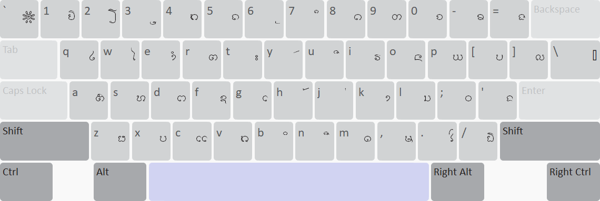
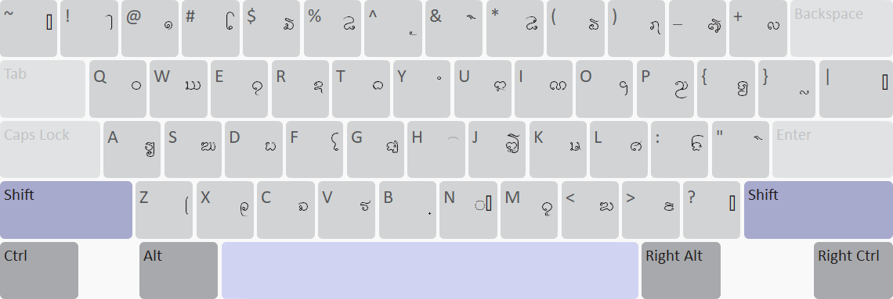
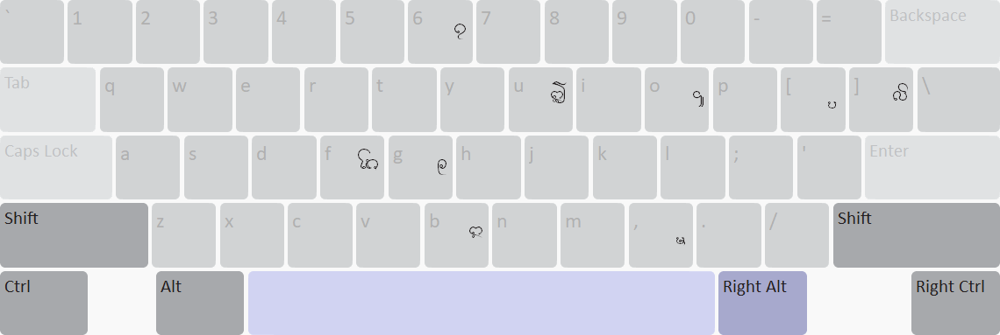
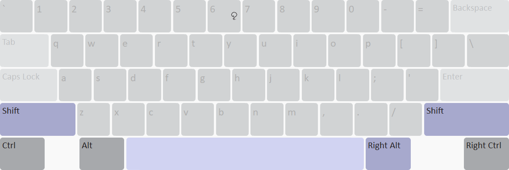

Lao/Esaan Tham Keyboard
This is Lao/Esaan Tham keyboard layout based on Thai Kedmanee, with automatic leading vowel reordering.
The Input Scheme
This keyboard tries to make Lao/Esaan Tham text entry in standard Unicode as natural as possible for most Thai users. It maps keys from the Kedmanee-based TIS 820-2538 keyboard layout into their corresponding Tai Tham Unicode character codepoints, and assigns those with no correspondence based on their shapes or functions as much as possible.
Furthermore, it also reorders leading vowel with the following consonant, to produce Unicode logical order from the input sequence Thai users are familar to.
With this scheme, Thai users should be able to type text, Pali or Thai/Lao, as if they were using Thai keyboard, with a little vowel adjustment, like SARA E + SARA AA for Pali SARA O.
For example:
| Thai script |
Typing order |
Tham script |
| นโม พุทฺธาย
| ᨶ ᩮ ᨾ ᩣ SPACE ᨻ ᩩ ᨴ ᩠ ᨵ ᩣ ᨿ |
ᨶᨾᩮᩣ ᨻᩩᨴ᩠ᨵᩣᨿ |
| สมฺปนฺโน
| ᩈ ᨾ ᩠ ᨸ ᨶ ᩠ ᩮ ᨶ ᩣ |
ᩈᨾ᩠ᨸᨶ᩠ᨶᩮᩣ |
| พระพุทธเจ้า
| ᨻ ᩕ ᨻ ᩩ ᨴ ᩠ ᨵ ᩮ ᨧ ᩫ ᩣ |
ᨻᩕᨻᩩᨴ᩠ᨵᨧᩮᩫᩣ |
Key Assignments
First, it maps Thai keys in TIS 820-2538 layout into their corresponding Tham characters for those that can be directly mapped. For those without direct correspondence, it tries to match characters with similar functions or shapes. For example:
- Tham MAI KONG ( ᩫ) is assigned to Thai MAITAIKHU ( ็) key (QWERTY: Shift+H), due to their close function in syllables.
- Tham MEDIAL RA (ᩕ ) is assigned to open parenthesis key (QWERTY: Shift+Z), due to their similar shapes.
- Tham Independent SARA I (ᩍ) is assigned to Thai MAI TRI key (QWERTY: Shift+U), for their similar shapes.
- Tham Independent SARA II (ᩎ) is assigned to Thai MAI CHATTAWA key (QWERTY: Shift+J), after the Independent SARA I assignment.
- Tham Independent SARA U (ᩏ) is assigned to Thai DO CHADA key (QWERTY: Shift+E), for their similar shapes.
- Tham Independent SARA U (ᩐ) is assigned to question mark key (QWERTY: Shift+M), for their similar shapes.
- Tham Tall SARA AA ( ᩤ) is assigned to Thai LAKKHANGYAO (ๅ) key (QWERTY: Shift+1), for their similar shapes and functions.
- Tham SARA OY ( ᩭ) is assigned to Thai slash (/) key (QWERTY: 2), for their similar shapes.
- Tham YO YADNAM (ᩀ) is assigned to Thai BAHT (฿) key (QWERTY: 1), so it stays close to SARA OY.
- Tham MAI KANG LAI ( ᩘ) is assigned to Thai YAMAKKAN key (QWERTY: Shift+7), for their similar shapes and position.
- Tham FINAL NGA ( ᩙ) is assigned to Shifted Thai NGO NGU key (QWERTY: Shift+.), for their similar function as syllable ending.
- Tham Independent SARA E (ᩑ) is assigned to close parenthesis key (QWERTY: Shift+X), as it's the key with closest shape left.
Some characters can be typed using Right Alt, such as Tham independent SARA O (ᩒ), which is assigned to the same key as the dependent SARA O (ᩰ). And with this scheme, other Tham independent vowels are also assigned to the same key as the corresponding dependent ones as an alternative inputting method, apart from the normal keys described above. Therefore:
- Tham independent SARA I can be typed either by the Thai MAI TRI key (QWERTY: Shift+U) or RightAlt + dependent SARA I (QWERTY: RightAlt+B).
- Tham independent SARA II, either by Thai MAI CHATTAWA key (QWERTY: Shift+J) or RightAlt + dependent SARA II (QWERTY: RightAlt+U).
- Tham independent SARA E, either by Thai close parenthesis key (QWERTY: Shift+X) or RightAlt + dependent SARA E (QWERTY: RightAlt+G).
- Tham independent SARA U, either by Thai DO CHADA key (QWERTY: Shift+E) or RightAlt + dependent SARA U (QWERTY: RightAlt+6).
- Tham independent SARA UU, either by question mark key (QWERTY: Shift+M) or RightAlt + dependent SARA UU (QWERTY: RightAlt+Shift+6).
Some keys that are not mentioned above can be found in the full layout in the next sections.
Keyboard Layout
Normal

Shift

Right Alt

Shift + Right Alt
